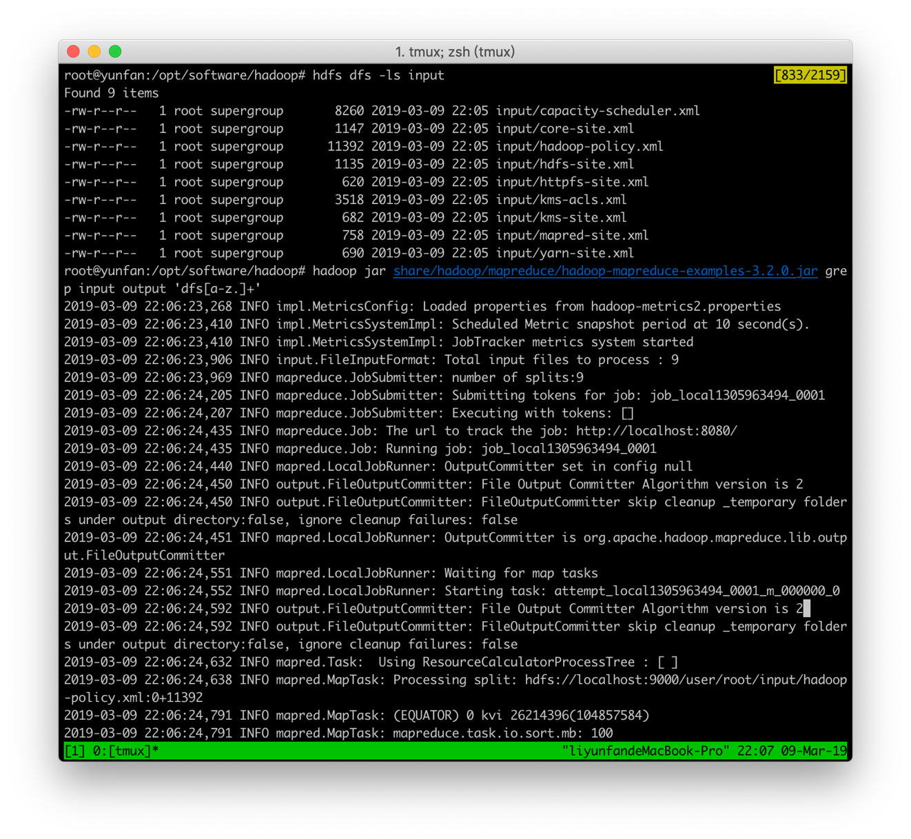

分布式系统HDFS部署报告
16302010002 李云帆
部署环境：阿里云，Ubuntu16.04
事先已经安装过JDK并配置过公钥登陆
（由于以前已经部署好了，所以现在是依靠回忆来回放一个部署过程，当时部署时参照了一篇博客，助教检查的时候可以看我的网站http://985lovestory.online:9870/）
1. 第一步，登上阿里云服务器。
2. 按照网上教程设置公钥（免密）登陆，
3. 安装JDK，
4. 下载安装 Hadoop 3（网址 ，一般选择下载最新的稳定版本，将下载的tar.gz保存到root目录下，使用命令
sudo tar -zxf PATH/TO/hadoop*.tar.gz -C /usr/local
将其解压到自定义的文件夹下，我是放在/opt/software/hadoop下 ），
5. Hadoop 解压后即可使用。输入
cd PATH/TO/hadoop
./bin/hadoop version
命令来检查 Hadoop 是否可用，成功则会显示 Hadoop 版本信息：
6. Hadoop伪分布式配置
伪分布式模式只需要改两个配置文件并且格式化namenode即可
编辑文件etc/hadoop/core-site.xml：
<configuration>
<property>
<name>fs.defaultFS</name>
<value>hdfs://localhost:9000</value>
</property>
</configuration>
编辑文件etc/hadoop/hdfs-site.xml：
<configuration>
<property>
<name>hadoop.tmp.dir</name>
<value>file:/usr/local/src/hadoop-3/tmp</value>
<description>Abase for
other temporary directories.</description>
</property>
<property>
<name>dfs.replication</name>
<value>1</value>
</property>
<property>
<name>dfs.namenode.name.dir</name>
<value>file:/usr/local/src/hadoop-3/tmp/dfs/name</value>
</property>
<property>
<name>dfs.datanode.data.dir</name>
<value>file:/usr/local/src/hadoop-3/tmp/dfs/data</value>
</property>
</configuration>
Hadoop配置文件说明：
Hadoop 的运行方式是由配置文件[LY1] 决定的（运行 Hadoop 时会读取配置文件）
配置完成后，执行 namenode 的格式化：
hdfs namenode -format
然后使用start-dfs.sh命令启动NameNode daemon进程和DataNode daemon进程：
在启动前需要修改etc/hadoop/hadoop-env.sh文件中的JAVA_HOME变量为实际的即可.
启动完成后，可以通过命令 jps 来判断是否成功启动，若成功[LY2] 启动则会列出如下进程: “NameNode”、”DataNode”
和 “SecondaryNameNode”
要使用 HDFS，首先需要在 HDFS 中创建用户目录(我的用户就是root)：
hdfs dfs -mkdir -p
/user/root
接着将 etc/hadoop 中的 xml 文件作为输入文件复制到分布式文件系统中，即将 /opt/software/root/etc/hadoop 目录下的xml文件复制到分布式文件系统中的 /user/root/input 中。我们使用的是
root用户，并且已创建相应的用户目录 /user/root，因此在命令中就可以使用相对路径如 input，其对应的绝对路径就是 /user/root/input：
|
hdfs dfs -mkdir input |
复制完成后，可以通过如下命令查看文件列表：
|
hdfs dfs -ls input |
伪分布式运行 MapReduce 作业的方式跟单机模式相同，区别在于伪分布式读取的是HDFS中的文件（可以将单机步骤中创建的本地 input 文件夹，输出结果 output 文件夹都删掉来验证这一点）。

|
hadoop jar
share/hadoop/mapreduce/hadoop-mapreduce-examples-3.x.jar grep input output
'dfs[a-z.]+' |
查看运行结果的命令（查看的是位于 HDFS 中的输出结果）：
|
hdfs dfs -cat output/* |
结果如下，注意到刚才我们已经更改了配置文件，所以运行结果不同。
也可以将运行结果取回到本地：
|
./bin/hdfs dfs -get
output ./output cat ./output/* |
Hadoop 运行程序时，输出目录不能存在，否则会提示错误org.apache.hadoop.mapred.FileAlreadyExistsException: Output
directory hdfs://localhost:9000/user/root/output already exists，因此若要再次执行，需要执行如下命令删除 output 文件夹：
|
hdfs dfs -rm -r output |
若要关闭 Hadoop，则运行
|
stop-dfs.sh |
下次启动 hadoop 时，无需进行 NameNode 的初始化，只需要运行 start-dfs.sh 就可以！
对比HDFS与NFS
NFS（网络文件系统）：开发的一种基于协议，允许客户端通过网络访问文件的文件系统。 NFS客户端允许用户访问文件，就像文件驻留在用户的本地设备上一样，实际它们存储在联网计算机的磁盘上。
HDFS（Hadoop分布式文件系统）：分布在许多联网计算机或节点中的文件系统。 HDFS具有容错能力，因为它在文件系统上存储了多个文件副本。
最大的区别是
复本（容错性）。 HDFS旨在应对失败。 NFS没有内置任何容错功能。
除容错外，由于HDFS支持多个文件副本。 这可以消除（或简化）许多客户端访问单个文件的常见瓶颈。 同时由于文件具有多个副本，因此在不同的物理磁盘上，读取性能比NFS更好。
[LY1]此外，伪分布式虽然只需要配置 fs.defaultFS 和 dfs.replication 就可以运行（官方教程如此），不过若没有配置 hadoop.tmp.dir 参数，则默认使用的临时目录为 /tmp/hadoo-hadoop，而这个目录在重启时有可能被系统清理掉，导致必须重新执行 format 才行. 所以我们进行了设置，同时也指定 dfs.namenode.name.dir 和 dfs.datanode.data.dir，否则在接下来的步骤中可能会出错。
[LY2]如果 SecondaryNameNode 没有启动，请运行 sbin/stop-dfs.sh
关闭进程，然后再次尝试启动尝试）。如果没有 NameNode 或 DataNode ，那就是配置不成功，请仔细检查之前步骤，或通过查看启动日志排查原因。
启动成功之后，浏览NameNode的web接口，Web界面示例地址如下（hadoop2.x端口默认为50070，hadoop3.x端口默认为9870